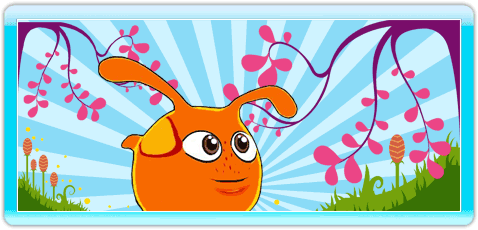
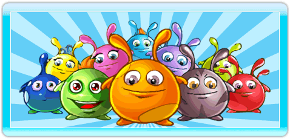
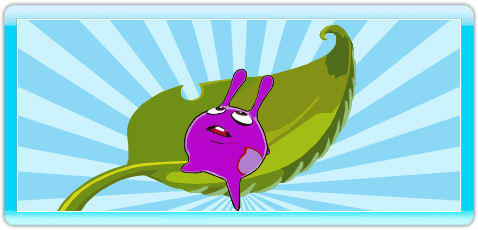

5 |
Le monde des Slimes |
 |
Chers joueurs et chers parents, bienvenue dans le monde étrange et fascinant des Slimes. Quelque part au fin fond de l’univers flotte une verdoyante petite planète couverte de forêts, de montagnes et de vallées. Truffée d’immenses grottes dans lesquelles coulent de nombreuses et puissantes rivières, cette planète abrite un petit peuple paisible et étonnant, vivant en symbiose avec elle : les Slimes.

Les Slimes sont de petits êtres braves et courageux au tempérament pacifique. Quasi sphériques, ils ont la particularité de se déplacer sur leur monde soit en roulant ou bondissant sur le sol soit en s’accrochant aux aspérités à l’aide de leurs 4 bras extensibles.

Depuis des temps immémoriaux, les Slimes vivaient paisibles sur leur planète, passant l’essentiel de leur temps à des cultures variées et à leurs récoltes suivies d’un repos bien mérité. Certes les Axons les avaient un peu bousculés dans leurs habitudes mais c’était du passé et ils coulaient de nouveau des jours heureux jusqu’à ce jour funeste où apparurent dans le ciel de sombres nuages aux pluies ravageuses.
Avec Mooky le guetteur, partez explorer l’étonnante planète des Slimes et découvrez l’origine mystérieuse des nuages noirs qui obscurcissent leur ciel et dont les pluies empoisonnent les récoltes. Cette audacieuse exploration vous fera découvrir une nature pleine de pièges à éviter et d’énigmes à résoudre. Pour éliminer les nuages et sauver les récoltes, elle vous demandera dextérité, rapidité, réflexion, patience et persévérance. Avec Mooky découvrez et vivez des moments riches en suspense et en actions. Tales of Elastic Boy un formidable jeu de détente. 
C’est le héros de notre aventure. Astucieux, courageux, patient, rapide et agile, Mooky va nous entraîner dans un parcours semé d’embûches à travers sa planète. Il devra alors, tout au long du chemin, montrer et user de toutes ses qualités pour arriver à surmonter toutes les épreuves et rendre au ciel de sa planète tout son éclat
C’est le chef des Slimes. Un grand sage qui fait preuve de beaucoup de discernement en choisissant Mooky le guetteur pour résoudre l’énigme des nuages noirs. C’est aussi un excellent professeur rompu à toutes les techniques de déplacement et de combat. C’est lui qui entraînera Mooky avant son départ
Guetteur comme Mooky, Skamy est envoyé par Slimy en reconnaissance dans le vieux temple. Très agile, il possède de précieuses techniques de déplacement qu’il apprendra à Mooky lors de leur rencontre
Bras droit de Slimy, un peu imbu de lui-même et un brin mystérieux. Lui aussi est envoyé par Slimy en reconnaissance. Contre de nouvelles techniques de déplacement très utiles à Mooky pour son enquête, il va se décharger sur lui de cette mission qui l’embête
C’est un crabe qui ne s’occupe que de lui tant qu’on ne le dérange pas. Si on le touche, il utilise ses pinces pour saisir l’intrus et le lancer loin de lui. Si Mooky ne s’en libère pas rapidement il perd une bulle d’énergie. Le Pinchu est vulnérable par une attaque marteau mais uniquement sur sa tête. Il se transforme alors en une pépite
C’est une sorte de gros papillon craintif qui se met en boule et hérisse ses piquants quand il se sent en danger. Il peut alors faire perdre une bulle d’énergie à Mooky s’il entre en contact avec lui. Le Piku, lorsqu’il n’est pas hérissé en boule piquante, est vulnérable à un choc violent comme par exemple une attaque marteau. Il se transforme alors en une pépite
Cette chenille urticante et très agressive se déplace sur les fils de soie de la toile qu’elle a tissé et par chance, elle n’en sort jamais. Très sensible aux vibrations de ses fils, elle se précipite sur l’intrus qui la dérange. Elle le pique, le paralyse et lui fait perdre une bulle d’énergie. Invulnérable, mieux vaut éviter pour Mooky de la déranger.
Agrippé et caché dans les recoins des parois le Chboum est une plante-canon. Elle possède une aire de détection lui permettant d’orienter son canon vers l’intrus. Elle lui projette alors des boules piquantes explosives qui, si elles font mouche, lui font perdre une bulle d’énergie. Il est possible de retourner le projectile à l’envoyeur par un coup de poing bien placé. La plante se transforme alors en bulle d'énergie.
Cette plante se fixe dans les creux et les anfractuosités des parois des tunnels et cavernes. Elle attrape Mooky s’il passe à sa portée, grâce à sa tige extensible. Quand elle attrape Mooky, celui-ci doit se débattre vigoureusement pour se libérer de la bouche de la plante gobeuse, sinon il est dissout et il perd une bulle d’énergie
On trouve cette plante posée sur le sol ou accrochée aux parois des tunnels et cavernes. Si Mooky la cogne trop violemment, elle s’ouvre et lui éjecte un nuage de pollens toxique qui ralentit ses capacités. Elle ne fait pas perdre d’énergie
On trouve cette dangereuse protubérance accrochée aux parois des tunnels et souvent elle gène le passage. Pourtant il faut éviter que Mooky la touche car son contact lui enlève une bulle d’énergie. |
 |
 |
 |